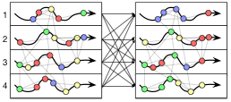

My Resume.
Interests:
Scalable Distributed Graph Computations

(publication under submission)
Scalable Tensor Computations
(publications under submission)
Other Publications:
- Balance paper: (“Balance Principles for Algorithm-architecture Co-design,” 2011).
- FFT paper: (“On the Communication Complexity of 3D FFTs and Its Implications for Exascale,” 2012).
References
- Czechowski, K., Battaglino, C., McClanahan, C., Chandramowlishwaran, A., & Vuduc, R. (2011). Balance Principles for Algorithm-architecture Co-design. In Proceedings of the 3rd USENIX Conference on Hot Topic in Parallelism (pp. 9–9). Berkeley, CA, USA: USENIX Association. Retrieved from http://dl.acm.org/citation.cfm?id=2001252.2001261
- Czechowski, K., Battaglino, C., McClanahan, C., Iyer, K., Yeung, P.-K., & Vuduc, R. (2012). On the Communication Complexity of 3D FFTs and Its Implications for Exascale. In Proceedings of the 26th ACM International Conference on Supercomputing (pp. 205–214). New York, NY, USA: ACM. Retrieved from http://doi.acm.org/10.1145/2304576.2304604